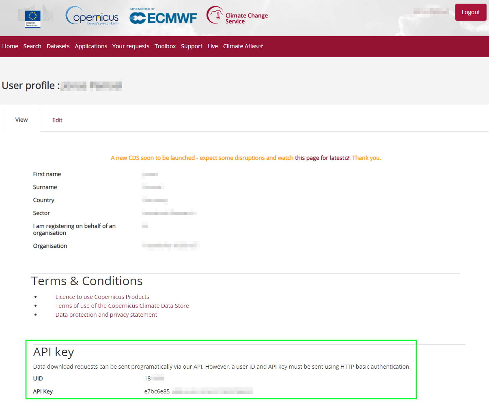

Installation
Requirements
An existing Python installation is required. To install WattAdvisor, it is necessary to have Python v3.11 available. Use either conda to create a fresh environment with that version or install Python v3.11 directly.
Installation of the Python package
Warning
It is highly recommended to install WattAdvisor into a new, clean and empty Python environment. You can use venv or conda to create such an environment.
Use pip to install the package into your Python environment:
pip install https://github.com/eclipse-wattadvisor/WattAdvisor/archive/main.zip
Install or add a solver to the project
An optimization problem solver is required to use WattAdvisor. The package installed via pip already contains the solver HiGHS. Furthermore, CBC and gurobi solvers are currently supported directly, but need to be installed separately.
Add weather data
WattAdvisor depends on weather data to estimate the power generation profile from renewable energy plants or to generate synthetical heat demand profiles from annual sums of heat demands. Currently, it is possible to either
use data from Copernicus Climate Change Service that you have to manually download
or use custom weather data from other sources provided as CSV file(s)
At the beginning, the easier way is to acquire weather data from Copernicus Climate Change Service.
Download weather data from Copernicus Climate Change Service
To download weather data from Copernicus Climate Change Service, you have to create an account. After creation, visit your account page to collect your API key and UID which is needed to download weather data. You find the key and UID at the bottom of the page:
After that, copy the following code snippet to a new Python script:
import cdsapi
# paste your uid here:
uid =
# paste your API key here:
key =
c = cdsapi.Client(key=f"{uid}:{key}", url="https://cds.climate.copernicus.eu/api/v2")
c.retrieve(
'reanalysis-era5-single-levels',
{
'product_type': 'reanalysis',
'variable': [
'100m_u_component_of_wind', '100m_v_component_of_wind', '10m_u_component_of_wind',
'10m_v_component_of_wind', '2m_temperature', 'forecast_surface_roughness',
'soil_temperature_level_4', 'surface_pressure', 'surface_solar_radiation_downwards',
'total_sky_direct_solar_radiation_at_surface',
],
'year': '2022',
'month': [
'01', '02', '03',
'04', '05', '06',
'07', '08', '09',
'10', '11', '12',
],
'day': [
'01', '02', '03',
'04', '05', '06',
'07', '08', '09',
'10', '11', '12',
'13', '14', '15',
'16', '17', '18',
'19', '20', '21',
'22', '23', '24',
'25', '26', '27',
'28', '29', '30',
'31',
],
'time': [
'00:00', '01:00', '02:00',
'03:00', '04:00', '05:00',
'06:00', '07:00', '08:00',
'09:00', '10:00', '11:00',
'12:00', '13:00', '14:00',
'15:00', '16:00', '17:00',
'18:00', '19:00', '20:00',
'21:00', '22:00', '23:00',
],
'format': 'netcdf',
},
'weather.nc')
Paste your Climate Data Store UID and API key at the corresponding position and run the script from the WattAdvisor Python environment. If everything is configured correctly, you will get a similar output like:
2024-06-07 13:44:26,667 INFO Welcome to the CDS
2024-06-07 13:44:26,667 INFO Sending request to https://cds.climate.copernicus.eu/api/v2/resources/reanalysis-era5-single-levels
2024-06-07 13:44:26,776 INFO Request is queued
2024-06-07 13:44:27,865 INFO Request is running
2024-06-07 13:46:20,994 INFO Request is completed
2024-06-07 13:46:20,994 INFO Downloading https://download-0015-clone.copernicus-climate.eu/cache-compute-0015/cache/data5/adaptor.mars.internal-1717760725.....nc to weather.nc (1.4G)
After the download has completed, move the downloaded weather.nc-file to your working directory.